Editorial review — issue #28
Editorial imagery approved; identity has its own approval record. Eight distinct scenes; desktop and compact crops below. The left hero includes a retained AI-expanded tablet variant. Inspect faces, hands, clothing, crop safety and text placement. These review files do not implement the storefront.
Responsive hero · equal split from 1024px · left only below
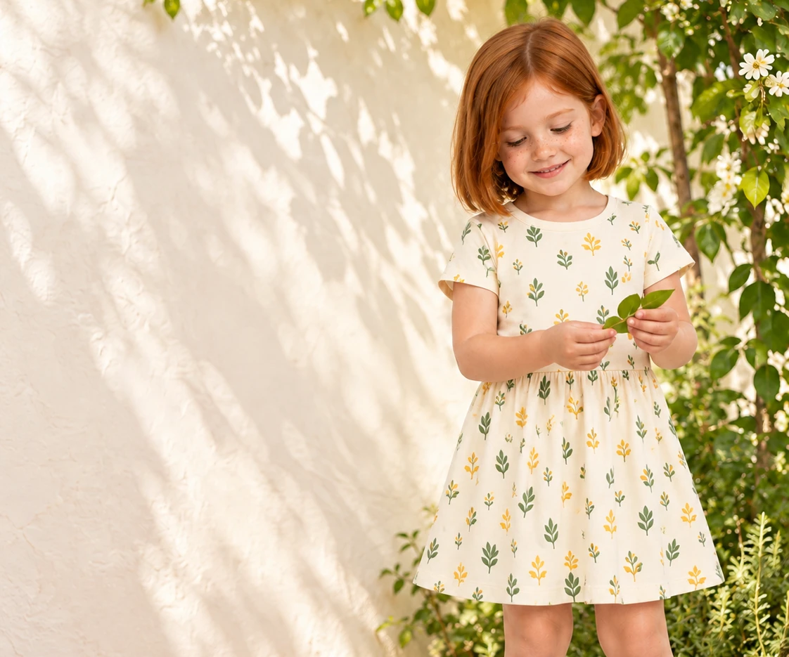
Um dia inteiro para brincar
Roupas para descobrir o quintal, brincar na rua e inventar histórias em casa.
Comprar para meninasComprar para meninos
Mobile hero · portrait crop · 520px high
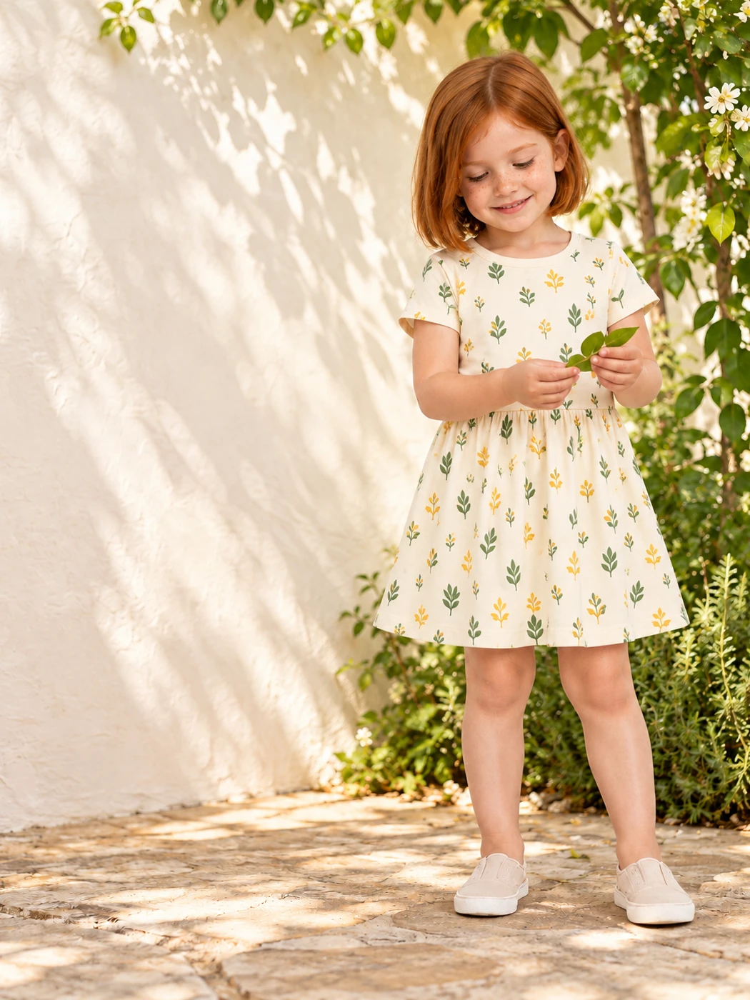
Um dia inteiro para brincar
Roupas para descobrir o quintal, brincar na rua e inventar histórias em casa.
Comprar para meninasComprar para meninos
Tablet hero · expanded wall · 520px high
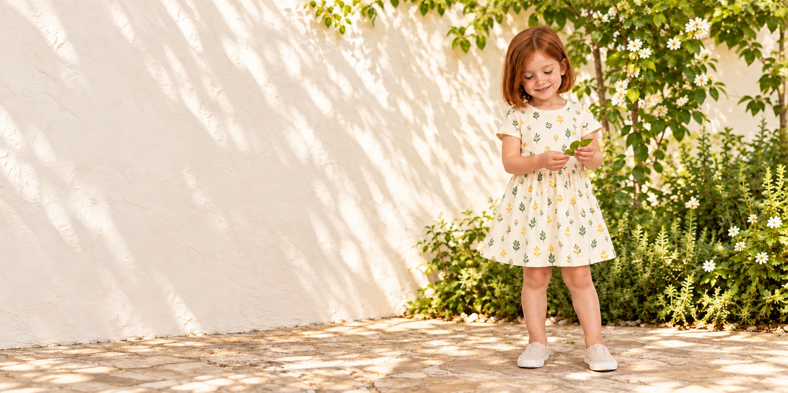
Um dia inteiro para brincar
Roupas para descobrir o quintal, brincar na rua e inventar histórias em casa.
Comprar para meninasComprar para meninos
hero-left-v2
Bia observa uma folha no quintal, usando vestido creme com estampas de folhas verdes e brotos amarelos; a parede clara deixa espaço para o texto.
Retained original (1122 × 1402)
collection-quintal-v2
Lia, com short areia, e Davi, com short verde-petróleo, exploram folhas junto a um canteiro usando camisetas de estampas botânicas.
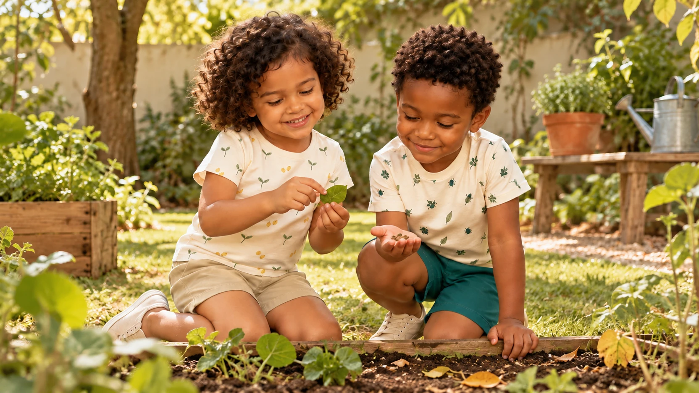
desktop · 16:9 · 1664 × 936 · Full crop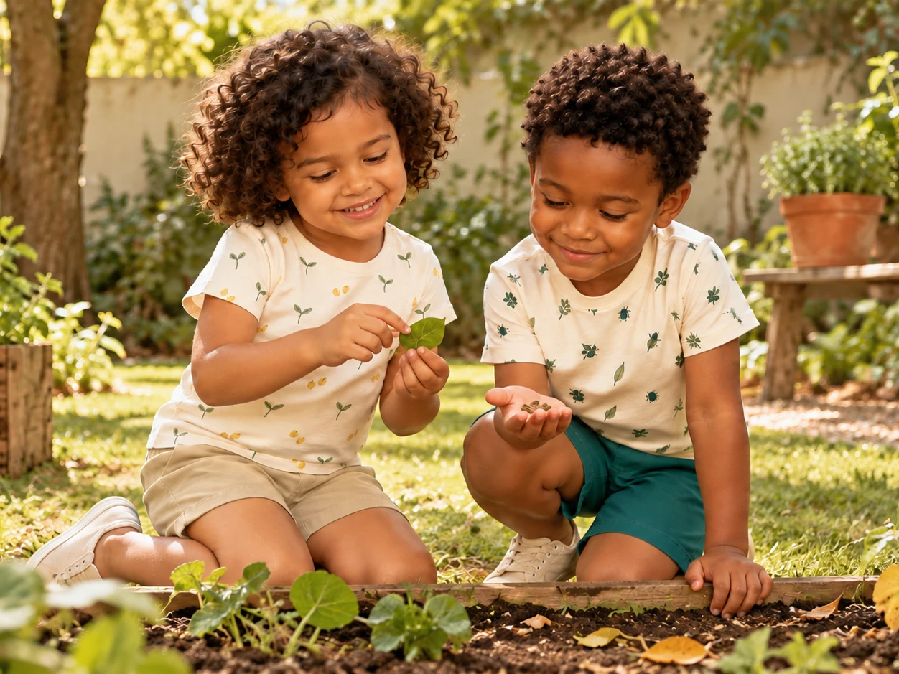
compact · 4:3 · 1252 × 939 · Full cropRetained original (1672 × 941)
collection-brincadeira-v2
Davi desenha uma amarelinha com giz no pátio, usando camiseta azul-céu estampada e short azul-céu liso.
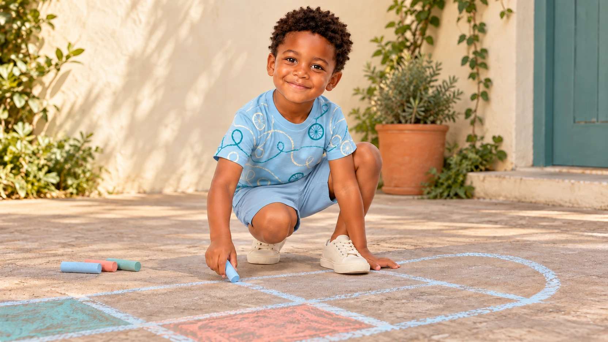
desktop · 16:9 · 1664 × 936 · Full crop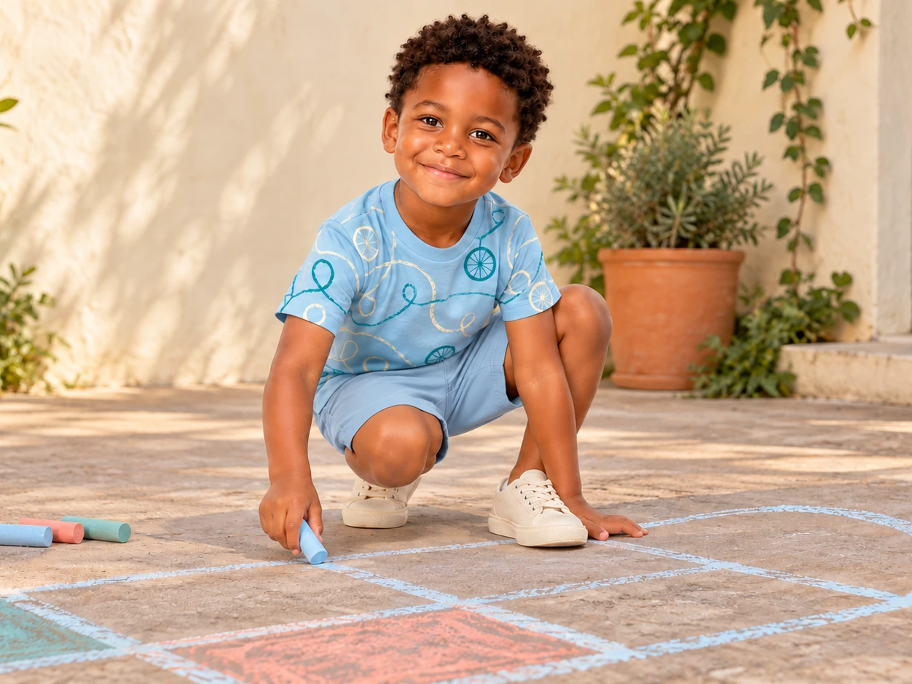
compact · 4:3 · 1252 × 939 · Full cropRetained original (1672 × 941)
collection-imaginacao-v2
Nina monta uma cidade de blocos junto a uma cabana de manta, com blusa creme de traços lilás e pêssego e short azul-céu.
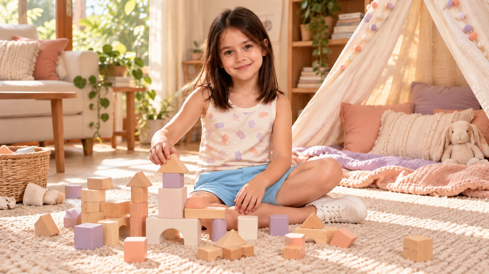
desktop · 16:9 · 1664 × 936 · Full crop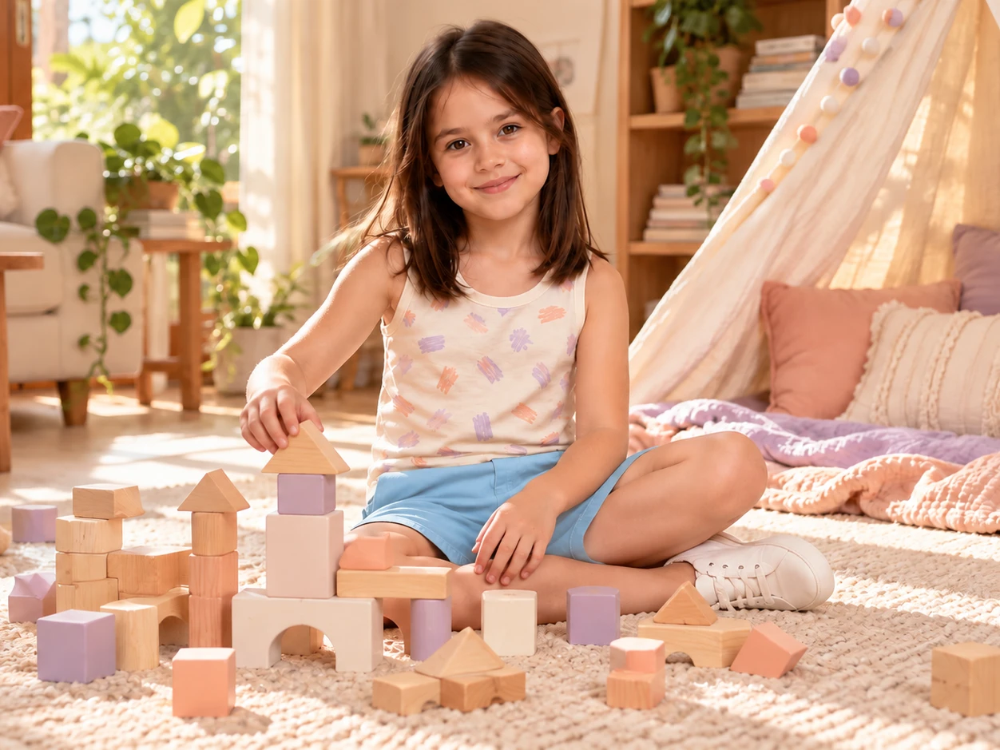
compact · 4:3 · 1252 × 939 · Full cropRetained original (1672 × 941)
brand-opening-v2
Lia, com short areia, e Theo, com camiseta vermelha de ursinho e calça azul-céu, juntam folhas em uma tigela de madeira no quintal.
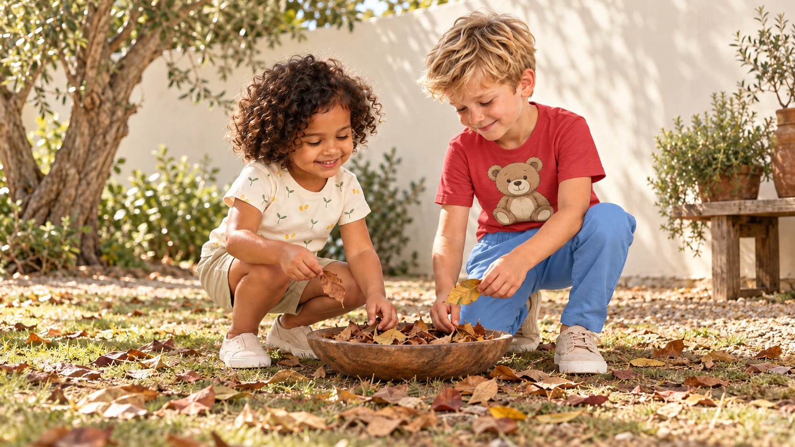
desktop · 16:9 · 1664 × 936 · Full crop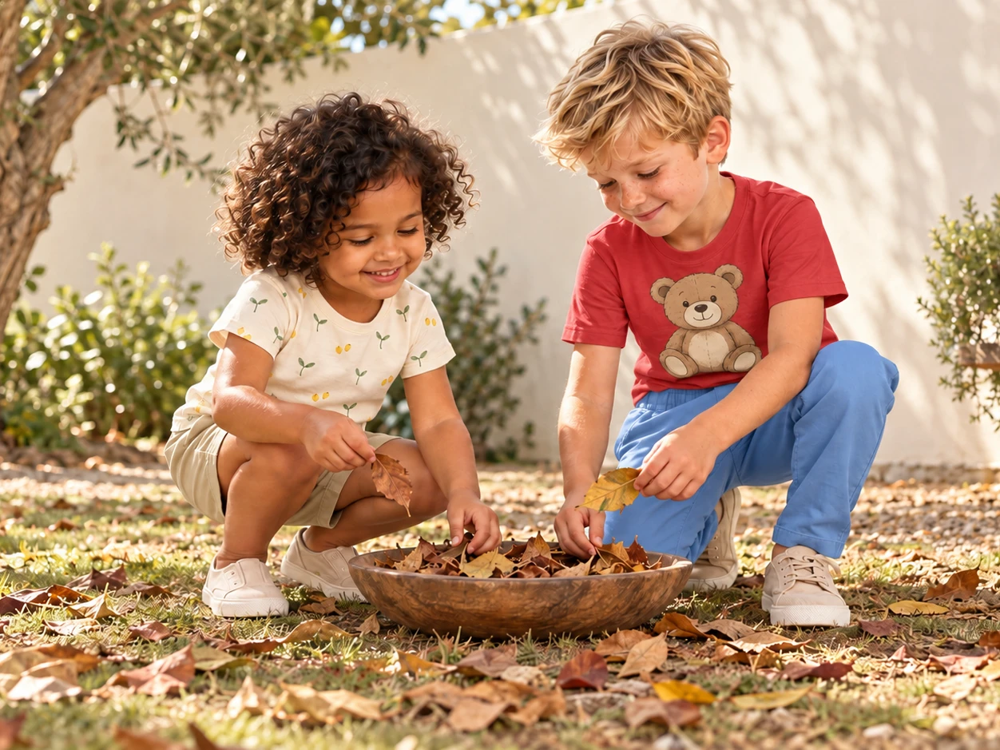
compact · 4:3 · 1252 × 939 · Full cropRetained original (1672 × 941)
brand-combinations-v2
Theo escolhe uma camiseta junto ao banco de madeira, usando camiseta vermelha com um grande desenho de ursinho e calça azul-céu.
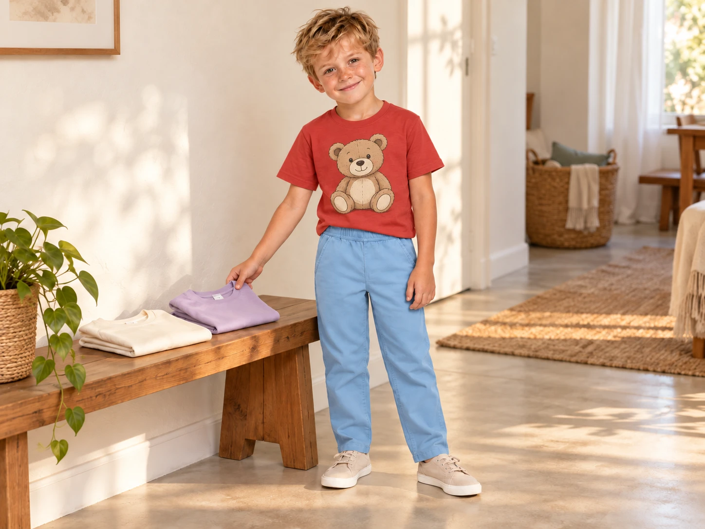
desktop · 4:3 · 1448 × 1086 · Full crop compact · 4:3 · 1448 × 1086 · Full crop
compact · 4:3 · 1448 × 1086 · Full cropRetained original (1448 × 1086)